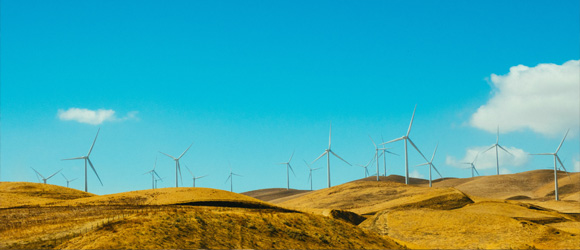

회사연혁
NO.1 고객서비스 전문 기업 kt is2014~2023
혁신과 지속성장‘고객 최우선’ 가치를 중심으로 혁신과 지속성장을 위해 주력한 시기입니다
-
- 2023년
- 7월ISO 14001:2015 환경경영시스템인증
- 5월KSQI 유·무선 통합 우수콜센터 달성
-
- 2021년
- 10월KS- CQI(콜센터품질지수)평가 이동통신 부문 최우수기업 인증 KS- CQI(콜센터품질지수)평가 초고속인터넷/IPTV 부문 우수기업
- 6월고객보호센터 과학기술정보통신부 장관 표창
- 3월윤경근 대표이사 취임
-
- 2020년
- 12월KS-CQI(콜센터품질지수)평가 유ㆍ무선ㆍ유료방송 분야 1위 고객센터 인증
- 6월민원서비스 향상 공로 과학기술정보통신부장관 표창
- 5월KSQI 유ㆍ무선 통합 우수콜센터 달성
-
- 2019년
- 10월5년 연속 KS-CQI(콜센터품질지수)평가 유·무선분야 1위 고객센터 달성
- 3월상호변경(케이티스 → 케이티아이에스)
-
- 2014년
- 11월KS-CQI 콜센터 품질지수 인증 조사 유선분야 1위 달성 장애인채용 활성화 공헌 국회의원 표창 수상
- 3월호텔 숙박용역 부가세 환급창구운영사업자 선정 (문화체육관광부)
2009~2013
kt is 출범과 성장출범과 함께 고객서비스 기반 마케팅전문기업으로 도약한 시기 입니다
-
- 2013년
- 9월KS Q ISO 9001:2009 / ISO 9001:2008 인증
- 4월한국전력공사 경기북부본부 콜센터 운영
-
- 2011년
- 11월Company of the year-telecommunications 부문 본상 IBA Best house organ for customers 부문 대상(사보)
- 6월전북은행 콜센터 운영개시 한국전력공사 고객센터 운영 개시
- 3월건강보험공단 고객센터 운영 개시 중소기업청 콜센터 운영 개시
-
- 2009년
- 12월한국보훈복지의료공단 고객센터 운영 개시
- 6월한국전력공사 인천본부 고객센터 운영 개시
- 5월한국전력공사 대구경북본부 고객센터 운영 개시

2005~2008
발전과 전진우수기업 수상과 함께 혁신적인 기업 발전을 이룩 한 시기 입니다
-
- 2008년
- 11월조선일보 독자센터 / 경희의료원 전화예약실 운영 개시 국민연금공단 서울 고객센터 운영 개시
- 4월대한민국 우량 중소기업 대상 수상(산자부)
-
- 2006년
- 7월114지역검색포탈사이트(114.co.kr) 오픈
- 3월정부민원안내 고객센터 업무 개시
-
- 2005년
- 9월2006년 국제 표준경영대상 품질경영부문 대상 수상
- 6월2006년 대한민국 프런티어 경영대상 수상
- 5월2005 품질경영부문 최우수상 수상 (한국능률협회 주관)
1935~2004
창업과 도약회사의 성장기반을 마련한 도약의 시기입니다
-
- 2004년
- 9월KT강북, 강원 110번 고객센터 운영사업 개시 서울대학교병원(분당) 콜센터 운영 개시
- 4월고객센터 품질인증 CQ마크 획득(사단법인 텔레마케팅 협회)
-
- 2002년
- 7월한국씨티은행 콜센터 (ASP)운영개시
- 3월KT강북 110 고객센터 운영 사업 개시
-
- 창립이전
- 9월우선번호 안내서비스 개시
- 6월한국인포서비스㈜ 설립
- 5월전화번호 안내서비스 개시